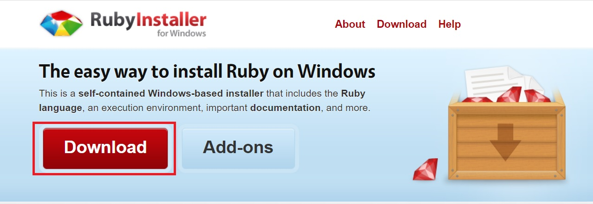
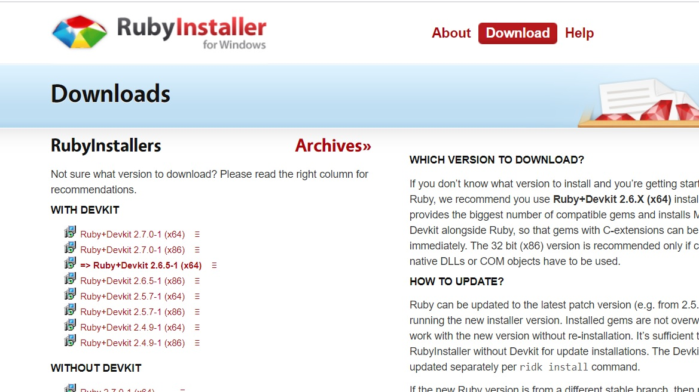
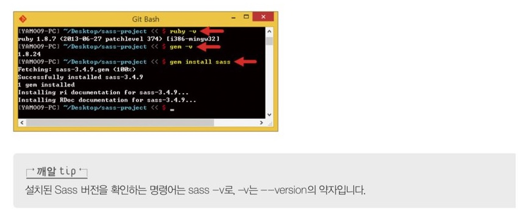
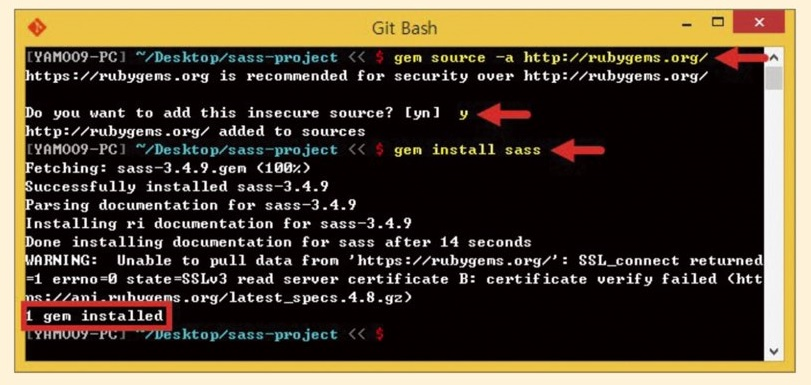

gulp-ruby-sass 모듈도 gulp-sass와 사용 방법이 비슷한가요?
- gulp-ruby-sass 모듈도 gulp-sass와 사용 방법이 비슷한가요?
-
Node.js 환경만으로도 잘 작동하는 gulp-sass와 달리 gulp-ruby-sass는 Ruby 환경이 필요합니다.
하지만 Windows에는 Ruby가 설치되어 있지 않아 http://rubyinstaller.org에서
Ruby를 다운로드한 후 설치해야 합니다.
[Download] 버튼을 누르고, 여러분의 컴퓨터 환경에 적합한 버전의 Ruby 설치 파일을 다운로드합니다.
x64가 붙은 파일은 64비트 운영체제용입니다.


Ruby를 설치할 때 반드시 체크해야할 선택 사항은 'Add Ruby executables to your PATH'입니다.
이 설정은 실행할 Ruby 파일의 경로를 환경변수에 추가하는 기능입니다.
체크하고 [Install] 버튼을 클릭하여 설치를 끝냅니다.
설치 즉시 Ruby를 사용할 수 있습니다.
정상적으로 Ruby가 설치되었는지 확인하려면 Git Bash에서 ruby -v 명령어를 실행합니다.
Ruby 패키지 관리자인 Gem 버전을 확인하려면 gem -v 명령어를 실행합니다.
그리고 Sass를 설치하려면 gem install sass 명령어를 실행합니다.
이것으로 Sass를 사용할 준비가 모두 끝났습니다.

- Ruby에 Sass를 설치할 때 오류가 발생하는데, 어떻게 해결하나요?
-
설치 과정에서 오류 메시지(error: could not find a valid gem 'sass' (<= 0)...)가 출력된다면 Gem 소스를 다운로드하는 경로를 변경해야합니다.
다운로드 경로를 변경하려면 gem source -a http://rubygems.org 명령어를 실행합니다.
Do you~ 로 시작하는 질문이 출력되면 yes를 의미하는 'y'를 입력합니다.
이후부터는 Sass를 설치할 때 오류가 발생하지 않습니다.
다른 Gem 소스 다운로드 경로인 "https://s3.amazonaws.com/production.s3,rubygems.org"를 입력해도 됩니다.
